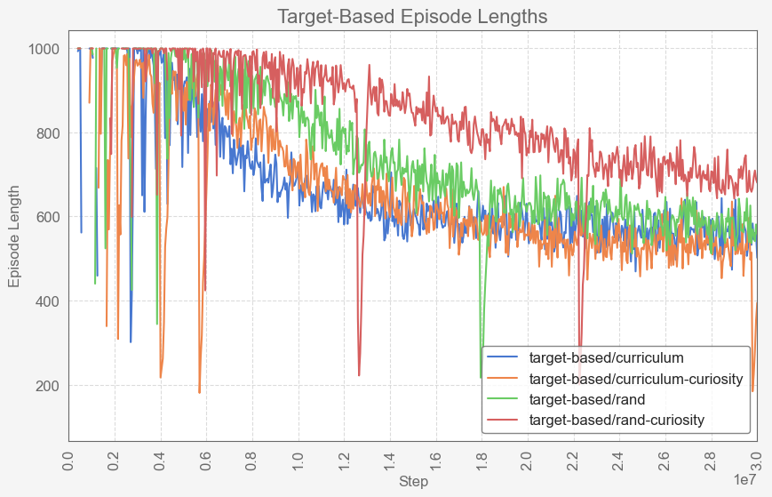
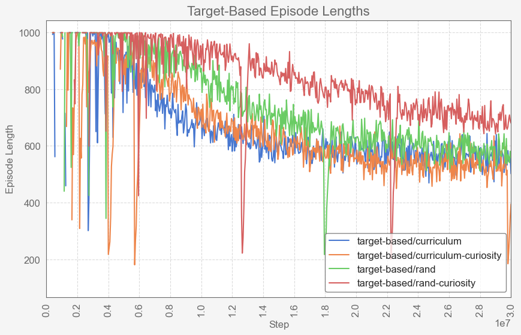

Introduction
Machine Learning research in First-Person Shooter (FPS) games has primarily been limited to platforms like VizDoom and DeepMind Lab, which are based on outdated game engines. This project explores the use of Unity ML-Agents to develop machine learning agents within a custom-designed FPS game environment, offering a modern alternative to traditional artificial intelligence techniques used in games.
Methodology
A custom FPS game environment was developed using the Unity game engine, providing a dynamic setting for training and testing AI agents through Unity ML-Agents. The AI agents were trained using a curriculum learning approach to gradually increase the complexity of the training environment, as well as self-play to allow the agents to learn from their own past experiences.
Results
Among the seven trained agents, four were target-based and three used self-play, including one initiated from the highest-performing target-based model. One agent was selected for integration into a playable version of the game. This agent was tested across 334 rounds against human players of varying skill levels.
The AI agent, while only having access to data simulating the information available to human players, was able to successfully navigate a randomized environment and compete effectively against skilled human players, achieving a 65.86% win rate.
The two top performing models were placed against each other in order to select a model for the playable version of the game to be distributed to survey participants. Results of this comparison can be seen below.
| Model ID | Wins | Losses | Draws | Win Rate |
|---|---|---|---|---|
| self-play/poca-curriculum | 637 | 279 | 108 | 62.21% |
| self-play-from-model/poca-curriculum | 279 | 637 | 27.25% |
After selecting a model, a playable build of the game was distributed to survey participants, where participants were able to play against the self-play/poca-curriculum model and export their gameplay results. Gameplay results of the survey can be seen below.
| Wins | Losses | Draws | Win Rate | Avg. Hits | Avg. Shots | Accuracy | |
|---|---|---|---|---|---|---|---|
| Humans | 101 | 220 | 13 | 30.24% | 5.31 | 22.17 | 23.95% |
| Agent | 220 | 101 | 65.86% | 7.71 | 50.60 | 15.24% |
 

Conclusion
This project highlights the viability of machine learning as an alternative to traditional AI techniques in first-person shooter games. By leveraging Unity ML-Agents, the developed AI agent was able to perform exceptionally well against skilled human players, achieving a 65.86% win rate. This suggests that machine learning can be used to create agents capable of matching or even exceeding the performance of AI created with traditional techniques, potentially requiring less work to develop due to not being reliant on implementations such as navigation meshes.
Playable demo against the
self-play/poca-curriculum model
available here: